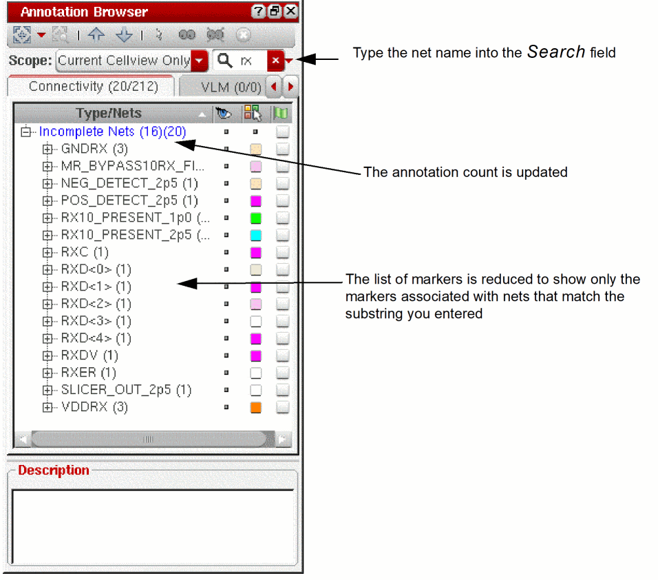
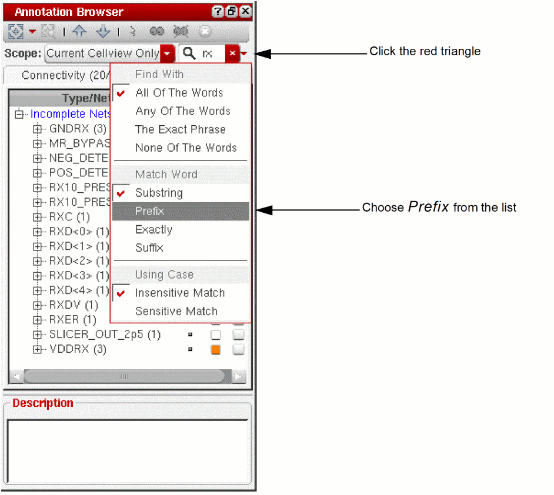
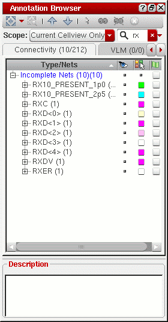

Searching for Specific Incomplete Nets
You can use the Annotation Browser Search function to locate all the incomplete net markers associated with a particular instance or net in the design. When you type in the name of a net, the browser updates automatically to show only those incomplete nets that feature that name either in the labels in the browser pane or in the messages shown in the Description field.
To search for all the incomplete net markers associated with a particular net,
-
Type a string into the Search field; for example,
rx.
By default the search function uses the text you enter as a case-insensitive substring. See Annotation Browser Assistant.
 -
To search for a prefix, click the small red triangle next to the Search field and choose Prefix from the drop-down list.
The list of markers and the annotation count are both updated accordingly.
 -
To search a for suffix, click the small red triangle and choose Suffix.
You can also filter the incomplete net markers shown in the browser based on the set of currently selected nets in the layout canvas or Navigator assistant.
Related Topics
Return to top